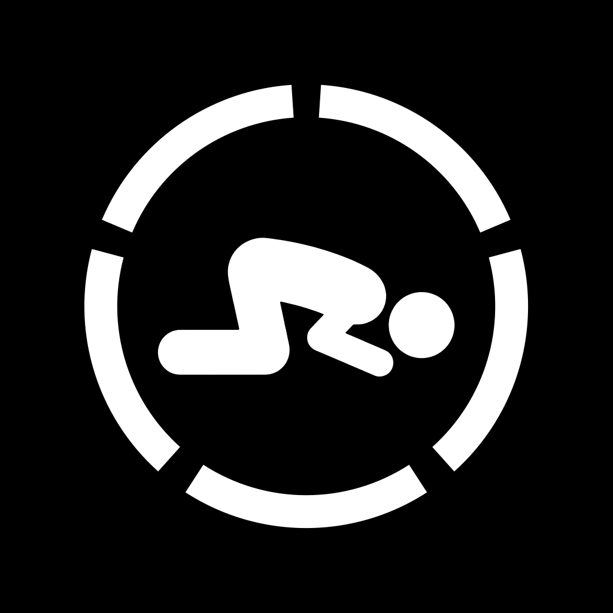
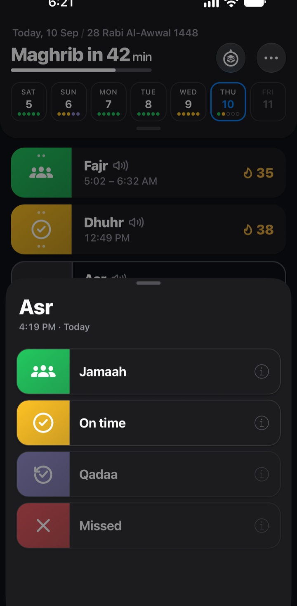
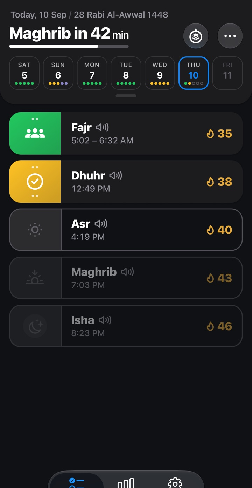
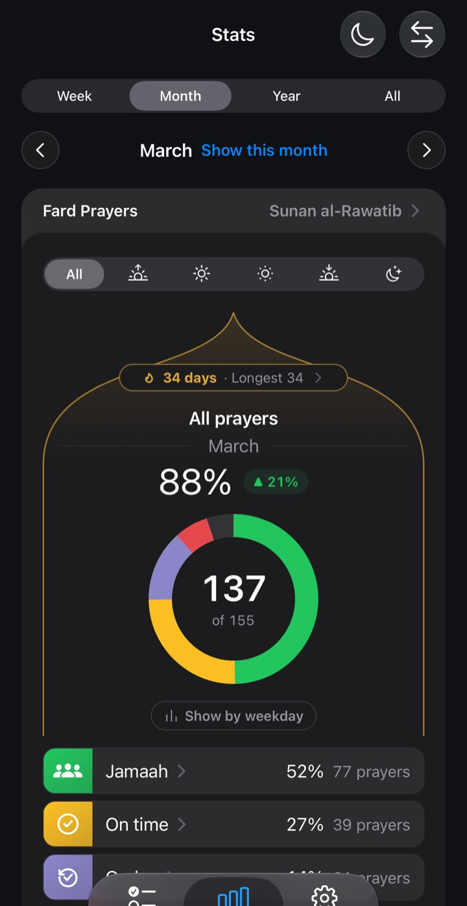

AwwabأَوَّابYour prayer companionرفيقك في صلاتك
Log each prayer as you pray it, make up what you missed, and see how far you've come.سجل كل صلاة حين تصليها، واقض ما فاتك، وشاهد كم تقدمت.
100% free, with no ads, and everything you log stays on your device.مجاني بالكامل وبلا إعلانات، وكل ما تسجله يبقى على جهازك.
Scan with your phone's cameraامسح الرمز بكاميرا هاتفك




